身を以て梅雨入りを知らせる [梅吉]
関西は昨日（6月26日）梅雨入りの発表がありました。
朝は良い天気だったので
「これで梅雨入りなの？」と思っていたらお昼頃から曇り空で湿度も上昇。
蒸し蒸し蒸し蒸し、大変不快です。
そんな梅雨入りを敏感に感じ取る猫。

猫の開きは我が家では今季初観測です！
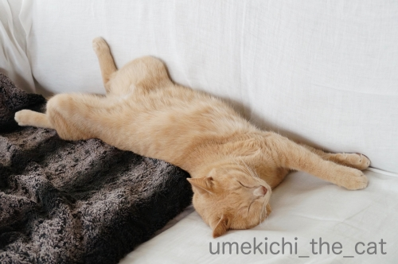
中々の開きっぷりです。
蒸し蒸しする時にはそうやって放熱するのが一番ですよねー。

いよいよ大阪も不快な時期を迎えました。
心身共にうまく放熱してこの時期をやり過ごしたいものです。
明日以降は台風もやってくる予報。
ちょっとやりたいことが溜まってます。
今日はこれにてm(_ _)m
 ↑ガブッと一押し↑
↑ガブッと一押し↑
朝は良い天気だったので
「これで梅雨入りなの？」と思っていたらお昼頃から曇り空で湿度も上昇。
蒸し蒸し蒸し蒸し、大変不快です。
そんな梅雨入りを敏感に感じ取る猫。
猫の開きは我が家では今季初観測です！
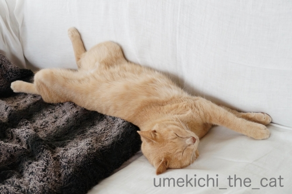
中々の開きっぷりです。
蒸し蒸しする時にはそうやって放熱するのが一番ですよねー。
いよいよ大阪も不快な時期を迎えました。
心身共にうまく放熱してこの時期をやり過ごしたいものです。
明日以降は台風もやってくる予報。
ちょっとやりたいことが溜まってます。
今日はこれにてm(_ _)m
梅吉さんの「梅しごと」（？）ー梅シロップ日記ー [梅吉]
梅の実が出回る季節、毎年梅シロップを作ってます。
梅酒を漬けるのは気が向いた年だけw
先日ChatBleuさんが「梅しごと」をカバーしてくれたので（笑）
今回の記事はセルフカバーにあたるでしょうかwww
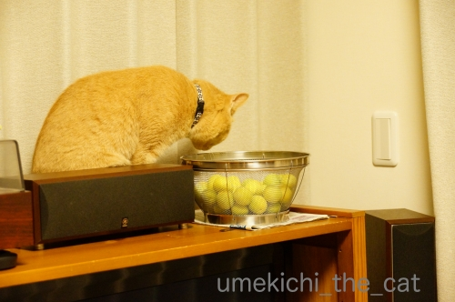
梅はきれいに洗ってつま楊枝でヘタを取って２〜３日置いておきます。
家の中に梅の良い香りが漂うんですよね＾＾
梅吉さん今年は積極的にお手伝い？と思ったら

１秒で興味を失いますw

もう少し良い写真を撮りたかったので梅吉に合わせて梅も移動します。
足早に立ち去る梅吉さん(ｰ ｰ;)

再度梅を移動させると「コレジャナイ」顔発動です(⌒-⌒;

翌朝再チャレンジするも今度はベランダ仕事をするおとーさんが気になって仕方がない。
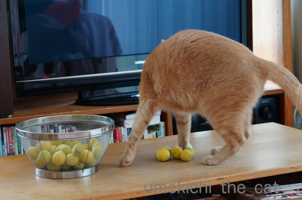
またもや行ってしまいました。
絡んだ写真は撮れませんでしたが梅吉さんが匂いを嗅いでくれたり
跨いでくれたので風味がアップして美味しいシロップが出来上がるかも、ですね(*>艸<)
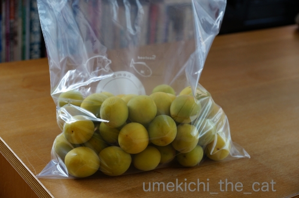
で、私の梅シロップの作り方なんですが梅の実をジップロックに入れて冷凍庫へ。
一定期間（＝やる気になるまで ＝テキトーな期間 ＝氷砂糖を買ってくるまで）凍らせてから
梅、氷砂糖と三層程度にして保存ビンに入れます。
実を冷凍した方が組織が壊れて梅のエキスが出やすくなり、かつ早く出来ると目にしてから
すっかりこの方法になりました。
ただし、凍っているので保存ビンが結露します。
新聞紙やタオルをビンの下に敷くことを忘れずに。
結露は一昼夜ぐらいで終わるのであとは普通に放置。
二週間もすると立派なシロッブが出来上がります＾＾
（ビンの消毒の手間などは全部省いて書いてます）
・・・氷砂糖を買ってこなければ！
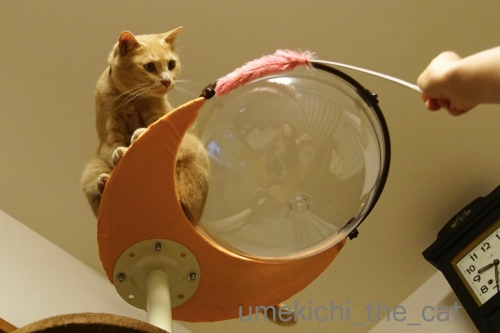
久しぶりにタワーのてっぺんに行ったけど
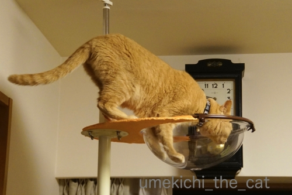
ここまでだった ( ꒪⌓꒪)
今おっとがタワーに秘策を施してます(≧▽≦)
さて大阪では今週28日、29日でG20サミットが開催されます。
そのため27日から30日までの４日間
高速道路・一般道どちらも広範囲で交通規制が行われます。
我が家の周辺は規制の対象ではないのですが
我が家に至る東西南北の幹線道路に通行止がいくつか。
スーパーやコンビニなど流通に支障が出て商品が少なくなりそう。
各社対策は取っているようですが「生もの」は確実に品数が減るでしょう。
慌てることの無いように25、26日である程度の食品を買いためて
27日からは買い物せずに済むよう備えようと思ってます。
宅配関係も今週は配達指定日から外しました。
生協の個配も頼んでいるのですが（個配？の男性は奥様orパートナーに聞いてみてね＾＾）
週一の配達日が27日木曜日とサミット本番の前日です。
生協では『予定配達時刻よりも遅れるかもしれませんが配達します』って言ってるんですが
商品が入荷されなかったり渋滞などでとんでもなく遅れて到着しそうな予感。
「あてにしてた商品がない、待っているのに来ない」とイライラするのも嫌なので
（年末などは夜10時くらいまで待つ時もあるんですよ）
今回はキャンセルしました。
22日土曜日からヘリコプターが飛び交う音が頻繁に聞こえます。
（メインの会場からうちまでは直線距離にすると4〜5キロくらいかな）
地方からの応援の警察官か？と思しき男性の集団がぞろぞろ歩いているのも見ました。
なんとなく落ち着かない空気の大阪です。
今週は週末も含めて近所で過ごすことになりそう。
混乱、事故、事件等なく無事にサミットが終わりますように。
〜2020東京オリンピックチケット、外れました＞＜
ID登録したのはおっとだけだったので一般発売、リセールに向けて
今更ながらですが私もID登録しておきました（遅いよねーw）〜
さいきん 特によくね（る）こ [梅吉]
季節的なものもあるのでしょうか。
最近の梅吉さんは日がな一日ず〜っと寝ています。
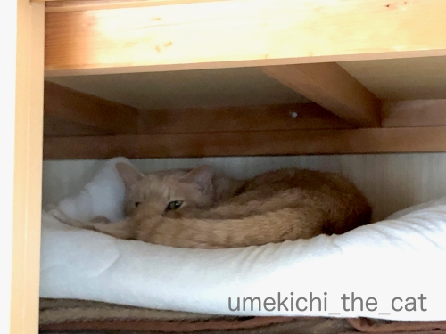
この日は押し入れで。
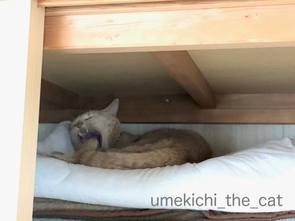
あくび付き。

PC横で。
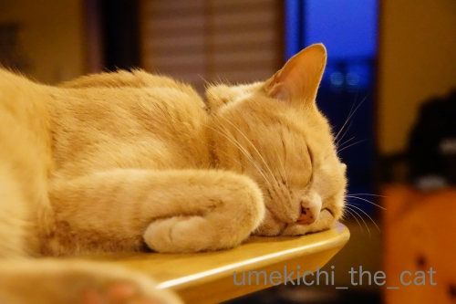
夜はカウンターの上で。
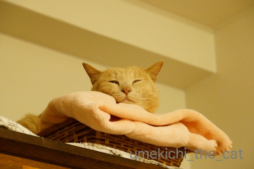
これは寝落ち寸前のお顔。白目じゃなくて残念w

レコードプレーヤーの上で。
ピントは肉球です！梅吉の肉球って「ピンク」ではないんですよね。
ちょっと赤みが強い感じ。
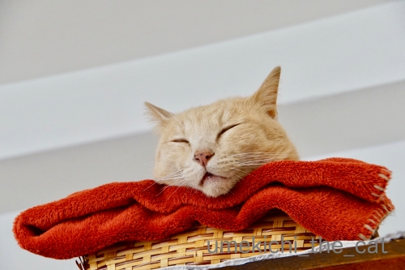
一番お気に入りのベッドの位置は棚の上なので自然このアングルの写真が多いです。
梅吉の口元には茶色のシミみたいのがたくさん。
お口がパカーと開いて見えるのはそのシミのせい・・・なんですが
これは本当に薄口開けて寝てましたわwww
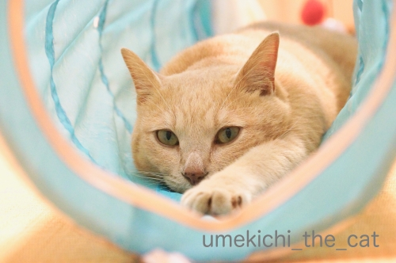
眠っているかと思えばこんな風に目を開けたままじーっとしていることもよくあります。
宇宙と交信中なのか未知の生物とタッチしようとしているのか・・・
当然このおててはおかーさんににぎにぎされます＾＾
↑ガブッと一押し↑
最近の梅吉さんは日がな一日ず〜っと寝ています。
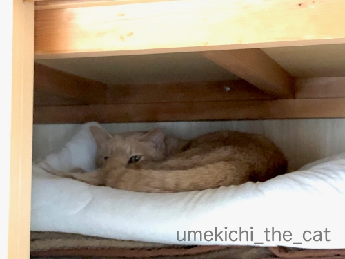
この日は押し入れで。
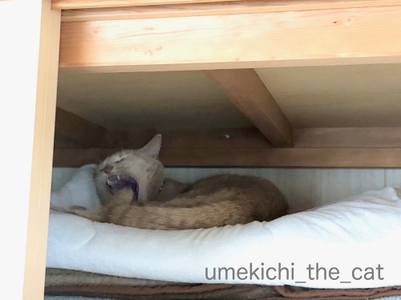
あくび付き。
PC横で。
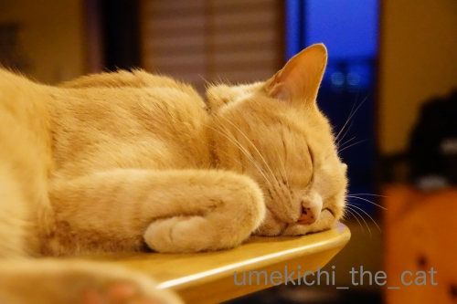
夜はカウンターの上で。
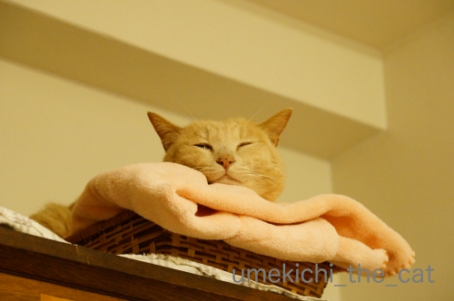
これは寝落ち寸前のお顔。白目じゃなくて残念w
レコードプレーヤーの上で。
ピントは肉球です！梅吉の肉球って「ピンク」ではないんですよね。
ちょっと赤みが強い感じ。
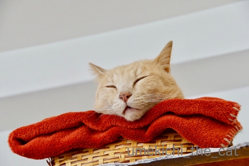
一番お気に入りのベッドの位置は棚の上なので自然このアングルの写真が多いです。
梅吉の口元には茶色のシミみたいのがたくさん。
お口がパカーと開いて見えるのはそのシミのせい・・・なんですが
これは本当に薄口開けて寝てましたわwww
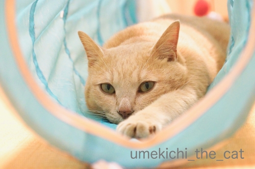
眠っているかと思えばこんな風に目を開けたままじーっとしていることもよくあります。
宇宙と交信中なのか未知の生物とタッチしようとしているのか・・・
当然このおててはおかーさんににぎにぎされます＾＾
雷の経験値を積む。 [梅吉]
15日（土）は一日中強風でした。
家の周りの木がびゅうびゅう鳴って昨年9月の台風を思い出しちゃいましたよ。

強い風に警戒モードの梅吉さん。

夕方頃からは滝の様な豪雨が！一瞬周りの家が見えなくなりました。
さらに落ち着きがなくなる猫w
この日はお出かけ予定だったのですがちょっとしたアクシデントで家にいることに。
屋外イベントだったので出かけなくて良かった。
出かけていたらずぶ濡れになるところでした(⌒-⌒;

激しい雨とともに遠くの方で雷鳴が。
もう居ても立っても居られない様子の猫さん。
少しの間うろうろしてましたがそのうち疲れたのか
箱ベッドに戻って寝始めました。
豪雨や雷、去年の出来事で少し鍛えられたかな。

強くなった（？）のはこれのせいもあるかしら・・・
ガブッとしているのは
近所の神社で授与していただいた雷と魔除けのお飾りです。
差し出したらかじりつく。期待を裏切らない漢、梅吉です(๑˃̵ᴗ˂̵)و
あおくんが早速エントリーしていたAIXIAの極楽ねこカレンダー。
もちろん梅吉もエントリーしましたよ＾＾
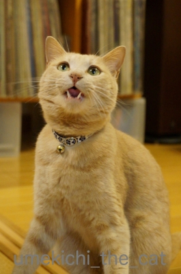
今年は「かつお祭り」の一枚で。
採用されるといいなぁ・・・
その極楽ねこカレンダー、今年のはそろそろこてつくんの登場です＾＾
https://www.aixia.jp/gokuraku/d.php?id=0000035775&s=1&ss=5a94d77e62985f79cb809750a64f2f12
上記のリンクが梅吉のページになります。
今の所得票二票！おっとと私、身内の組織票です(*>艸<)(*>艸<)
↑ガブッと一押し↑
家の周りの木がびゅうびゅう鳴って昨年9月の台風を思い出しちゃいましたよ。
強い風に警戒モードの梅吉さん。
夕方頃からは滝の様な豪雨が！一瞬周りの家が見えなくなりました。
さらに落ち着きがなくなる猫w
この日はお出かけ予定だったのですがちょっとしたアクシデントで家にいることに。
屋外イベントだったので出かけなくて良かった。
出かけていたらずぶ濡れになるところでした(⌒-⌒;
激しい雨とともに遠くの方で雷鳴が。
もう居ても立っても居られない様子の猫さん。
少しの間うろうろしてましたがそのうち疲れたのか
箱ベッドに戻って寝始めました。
豪雨や雷、去年の出来事で少し鍛えられたかな。
強くなった（？）のはこれのせいもあるかしら・・・
ガブッとしているのは
近所の神社で授与していただいた雷と魔除けのお飾りです。
差し出したらかじりつく。期待を裏切らない漢、梅吉です(๑˃̵ᴗ˂̵)و
あおくんが早速エントリーしていたAIXIAの極楽ねこカレンダー。
もちろん梅吉もエントリーしましたよ＾＾
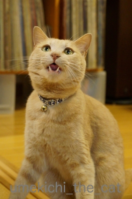
今年は「かつお祭り」の一枚で。
採用されるといいなぁ・・・
その極楽ねこカレンダー、今年のはそろそろこてつくんの登場です＾＾
https://www.aixia.jp/gokuraku/d.php?id=0000035775&s=1&ss=5a94d77e62985f79cb809750a64f2f12
上記のリンクが梅吉のページになります。
今の所得票二票！おっとと私、身内の組織票です(*>艸<)(*>艸<)
広い場所でも狭い場所へ [梅吉]
未だ梅雨入りしない大阪。
多少蒸し暑くはありますがお天気もまずまずな日が続いております。

本格的にジメジメする前に大物のお洗濯に熱が入ります。
この日はリビングの大きなカーテン。
梅吉さんも積極参加ですよ＾＾

隠れ家？日よけ？
干したばかりのお洗濯物からはマイナスイオンが出てますか？

うちのベランダは電柱のてっぺんとほぼ同じ高さ。
電柱の金具の隙間にスズメが巣を作っているので
子育て真っ最中の親スズメが頻繁に行き交います。
それをガン見する梅吉さん。
ちょっと嫌な話・・・
このスズメの巣を狙ってカラスが来ます。
巣に嘴を突っ込んで子スズメを引っ張り出して自分＆子カラスのエサに。
カラスも生きるためのこと。
自然の摂理には口を挟むべきではないと思っているのでなるべく黙ってますが
つい「こらー」と言ってしまうことも。でもカラスは全然逃げませんよ(-_-メ)
梅吉が見てても全く動ぜずw
私も梅吉もカラスに馬鹿にされているのかも〜。

梅吉さんは襲われないから後ろは気にしなくて大丈夫ですよ。
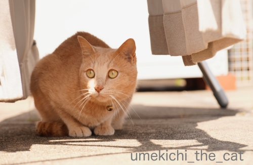
何かの下や隅っこが落ち着くのは私と一緒の様です(*>艸<)
お布団を干しても走ってきてこの位置でじっと周りを見ています。
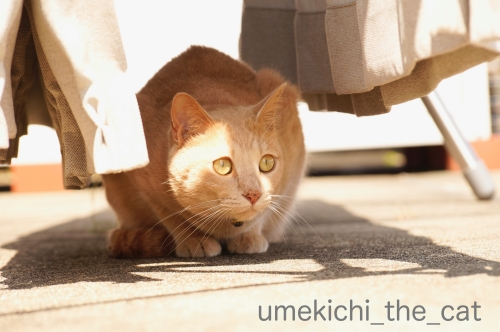
落ち着く場所で存分にお外を楽しんでくださいな＾＾
今使っているリビングのカーテン、買ってから初めて洗濯しました。汗、汗、汗(^_^;)
（何年経っているかは言わないでおこう・・・）
我が家のリビングの窓は通常サイズよりかなり大きいので当然カーテンも大きい。
洗濯機に入らないだろうな〜。頻繁に掃除機で埃を吸っているから大丈夫だよね〜。
クリーニングに出したら高そうだな〜。
などどグダグダ理由をつけていたのですが突然スイッチが入って洗濯槽に入れてみたら・・・
楽勝じゃない(〃▽〃)
以来晴れ間を見てはカーテンのお洗濯。
いや〜、気分的にもさっぱりして良い感じです♪
以前marimoさんから「カーテン、ニャンコの爪痕ついてませんか？」と
コメント返しをいただいたのですが・・・
レースのカーテンはどの部屋もひどいですw
もちろん下手人は梅吉。幼い頃はレースのカーテン登りをしたし。
洗濯するときは洗濯ネットを二重にして最弱モードで優しく洗って
傷口が広がらない様に気を使ってます(｡-_-｡)
買い換えてもまたすぐ同じ様になっちゃいそうだしー。
カーテン（本体？）の方は幸いにも無事なので助かってます＾＾
みなさんカーテンのお洗濯してますか？
↑ガブッと一押し↑
多少蒸し暑くはありますがお天気もまずまずな日が続いております。
本格的にジメジメする前に大物のお洗濯に熱が入ります。
この日はリビングの大きなカーテン。
梅吉さんも積極参加ですよ＾＾
隠れ家？日よけ？
干したばかりのお洗濯物からはマイナスイオンが出てますか？
うちのベランダは電柱のてっぺんとほぼ同じ高さ。
電柱の金具の隙間にスズメが巣を作っているので
子育て真っ最中の親スズメが頻繁に行き交います。
それをガン見する梅吉さん。
ちょっと嫌な話・・・
このスズメの巣を狙ってカラスが来ます。
巣に嘴を突っ込んで子スズメを引っ張り出して自分＆子カラスのエサに。
カラスも生きるためのこと。
自然の摂理には口を挟むべきではないと思っているのでなるべく黙ってますが
つい「こらー」と言ってしまうことも。でもカラスは全然逃げませんよ(-_-メ)
梅吉が見てても全く動ぜずw
私も梅吉もカラスに馬鹿にされているのかも〜。
梅吉さんは襲われないから後ろは気にしなくて大丈夫ですよ。
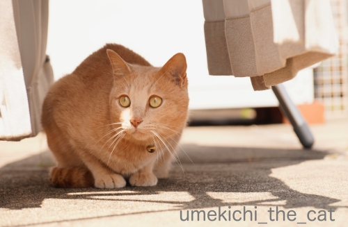
何かの下や隅っこが落ち着くのは私と一緒の様です(*>艸<)
お布団を干しても走ってきてこの位置でじっと周りを見ています。
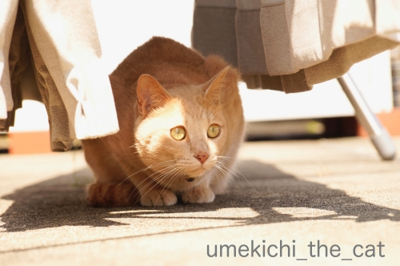
落ち着く場所で存分にお外を楽しんでくださいな＾＾
今使っているリビングのカーテン、買ってから初めて洗濯しました。汗、汗、汗(^_^;)
（何年経っているかは言わないでおこう・・・）
我が家のリビングの窓は通常サイズよりかなり大きいので当然カーテンも大きい。
洗濯機に入らないだろうな〜。頻繁に掃除機で埃を吸っているから大丈夫だよね〜。
クリーニングに出したら高そうだな〜。
などどグダグダ理由をつけていたのですが突然スイッチが入って洗濯槽に入れてみたら・・・
楽勝じゃない(〃▽〃)
以来晴れ間を見てはカーテンのお洗濯。
いや〜、気分的にもさっぱりして良い感じです♪
以前marimoさんから「カーテン、ニャンコの爪痕ついてませんか？」と
コメント返しをいただいたのですが・・・
レースのカーテンはどの部屋もひどいですw
もちろん下手人は梅吉。幼い頃はレースのカーテン登りをしたし。
洗濯するときは洗濯ネットを二重にして最弱モードで優しく洗って
傷口が広がらない様に気を使ってます(｡-_-｡)
買い換えてもまたすぐ同じ様になっちゃいそうだしー。
カーテン（本体？）の方は幸いにも無事なので助かってます＾＾
みなさんカーテンのお洗濯してますか？
褒めて伸ばす？！つもりはなくても・・・ [梅吉]
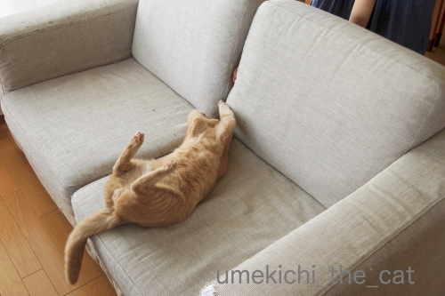
ソファの背もたれの間から指をわしゃわしゃするととても喜ぶ。

そこにまたたびキャンディを投入すると大興奮でクッションに蹴りの一撃！！
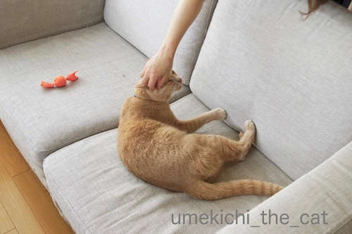
「その蹴りがすごいですねー！頑張りましたねー！！」
と褒められる梅吉さんw
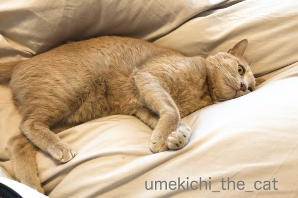
休日に朝寝をしているだけで

「そこにいましたかー！エライですねー！！」とまたもや褒められる。
このほか「おしっこ出ましたね♡ジャーって音が美しいですよ＾＾」
「りっぱなうんPですねぇぇぇぇ健康、健康！」
と事あるごとに褒めてしまいます。
別に褒めて伸ばそうとか思ってるわけじゃないのに自然に口から出ちゃうw
ニンゲンからポジティブな言葉を引き出す猫ってすごいですよねー！
エライですよね！！偉大ですよねー！！！（また褒めてるw）
 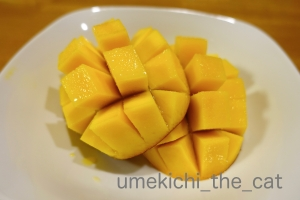
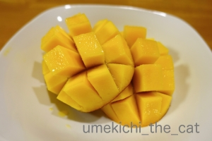
年に一度のお楽しみ宮崎県産マンゴー(๑˃̵ᴗ˂̵)و
果肉がめっちゃ柔らかでした＾＾
↑ガブッと一押し↑
ソファの背もたれの間から指をわしゃわしゃするととても喜ぶ。
そこにまたたびキャンディを投入すると大興奮でクッションに蹴りの一撃！！
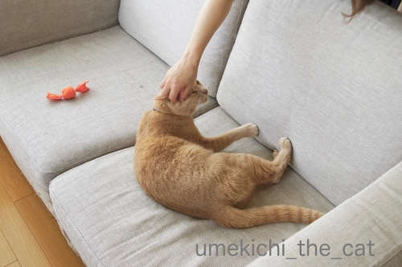
「その蹴りがすごいですねー！頑張りましたねー！！」
と褒められる梅吉さんw
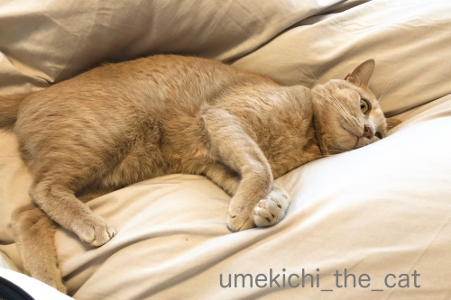
休日に朝寝をしているだけで
「そこにいましたかー！エライですねー！！」とまたもや褒められる。
このほか「おしっこ出ましたね♡ジャーって音が美しいですよ＾＾」
「りっぱなうんPですねぇぇぇぇ健康、健康！」
と事あるごとに褒めてしまいます。
別に褒めて伸ばそうとか思ってるわけじゃないのに自然に口から出ちゃうw
ニンゲンからポジティブな言葉を引き出す猫ってすごいですよねー！
エライですよね！！偉大ですよねー！！！（また褒めてるw）
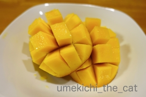年に一度のお楽しみ宮崎県産マンゴー(๑˃̵ᴗ˂̵)و
果肉がめっちゃ柔らかでした＾＾
それはココロの汗、だった [梅吉]
先週末、梅吉の定期診察のため病院へ行って来ました。
（梅吉は中性脂肪値が高いので定期通院が必要です。
生活習慣病ではなくて体質。お薬と病院は一生のおつきあいになります。
詳しくは審判の下った日をどうぞ。）
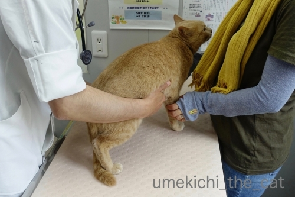
いつものようにお腹をもみもみ。
腸の働き具合を触診してもらってます。

という視線(⌒-⌒;
「うーわー」言ってましたけどこの日は「シャーーーっ！」は無かったです。
ちょっとつまんないw

採血後、先生に抱っこされて戻って来た様子です。
採血の結果、中性脂肪値をもう少し下げたいなぁ・・・ということで
水薬の濃度を少し濃くして与えることになりました。
お薬、まだ手探りが続いております。
で、今日の本題。
ちょうど診察を受けている最中に梅吉のお鼻が「にじにじ」状態に！
にじにじってこれです。

にじにじMAXの梅吉さんw（診察時の写真ではありませんが）
お鼻の上の方まで濡れて滲んだ感じになっていますよね。
湿度の高い時になるのでは？と思っていたのですがそうでも無い事が多々。
（『湿度高い時になる説』の記事はこちらです）
ちょうど良い機会なので先生に「汗ですか？」と聞いてみました。
答えは「涙です。」でした。
人間も猫も鼻涙管という目と鼻をつないでいる管があるそう。
泣くと涙が鼻からも出て（鼻水ともいうw）しまうのはこの為だと。
梅吉も何かの加減で涙が多くなった時に鼻涙管を通った涙がお鼻の上の方に溢れ出る
ということのようです。
普通は涙が下がって来たら鼻から出るか
喉を通って行くと思うのですが梅吉はお鼻の上部に滲み出る体質w
そして涙が多め？
「梅吉くんは瞳が潤っているんだねー」「ドライアイじゃ無いんだねー」
というお話で心配するようなことではありませんって。
逆にいつも目の周りが涙がちな時は鼻涙管の病気の可能性もあるそうです。
ちなみに猫が汗をかくのは肉球。
梅吉は見た事ありませんが
先代猫は病院に行くと緊張して診察台の上に大判の汗の肉球印を押してました(≧▽≦)
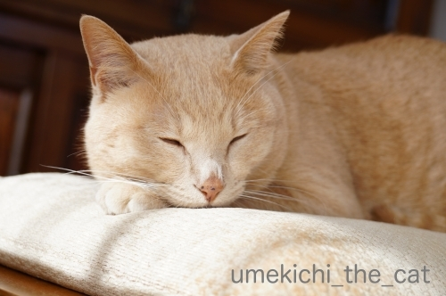
（ちょっぴりにじってます）
鼻に「ココロの汗」をかく『漢 梅吉』。
『漢』たるもの涙は流しませんか？(*>艸<)

（これもちょっぴりにじってます）
※「涙は、涙は心の汗なんだぁー！」って昔のドラマのセリフ、ご存知ですか？(*>艸<)※
いろんな写真てんこ盛り [梅吉]

ぐんにゃりした寝相の梅吉さん。
窓辺にある座布団の上は風を感じられて気持ちが良いのかな。
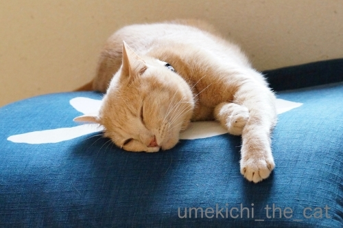
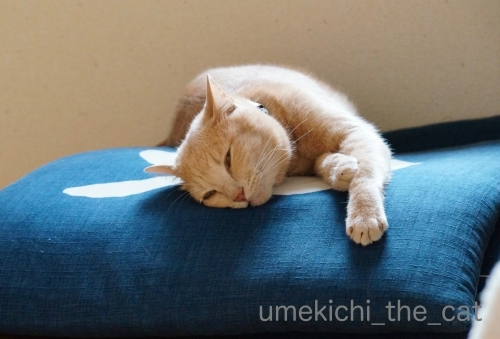

上の写真の向こう側はここです。
踏ん張りながらラベンダーをくんくんしますよ。

柑橘系、ミント系、コーヒーの匂いなど
にゃんこそれぞれに嫌う匂いがあると思いますが・・・
梅吉はあまり匂いに敏感ではないのか何を嗅がせても割と平気。
嫌な顔するのは虫刺されの薬の「ツ〜ン」とした匂いくらいかな(⌒-⌒;
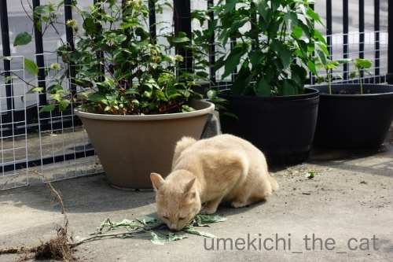
引き抜かれた雑草の匂いもチェック。
後ろのもさもさ茂った植物たち。一番手前はクレマチス。
花が咲き終わるとモワモワした緑の玉みたいなのが出来ます。
このモワモワの先端にタネがついていて風に乗って飛んで子孫を増やしていくようですよ。
タンポポみたいな感じ？
その後ろは「インドジン・ウソツカナイ」。ずいぶん大きくなって花が咲いてます。
順調にいけば沢山トウガラシが収穫できそう！
一番奥の鉢は「オクラ」です。オクラの花って可愛いんですよ＾＾
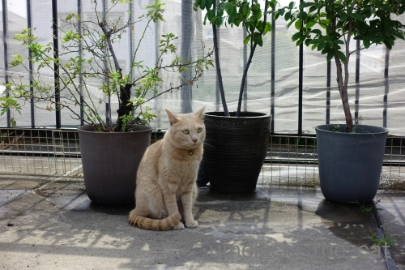
時々カラスが梅吉をからかうように低く飛んで行きます。

消防設備点検もありました。
長い検査棒をガン見してますw
こうやって抑えていないとおっちゃんの靴下の匂いを嗅ぎに行くんです(-_-メ)
や〜め〜て〜〜〜〜〜〜〜っ。

鴨居にフックをつけています。
摘んだラベンダーをここに下げて乾燥していたのですが
案の定梅吉アタックに会いました(*>艸<)
それがとっても楽しそうだったのでじゃらしの先端につけるおもちゃとチェンジ。
（真ん中に見える羽）
おもちゃになるとあまり食いつかないあるある発動(-_-メ)
一番右端はおっとが作った苔玉釣り忍です。
時々梅吉が見てますがここまでは届くまい！
どうと言うことのない写真ですがちょっと気に入っている一枚です＾＾
一番の悪顔はどれだ！ [梅吉]

の時はこんなに神妙な顔しているのに
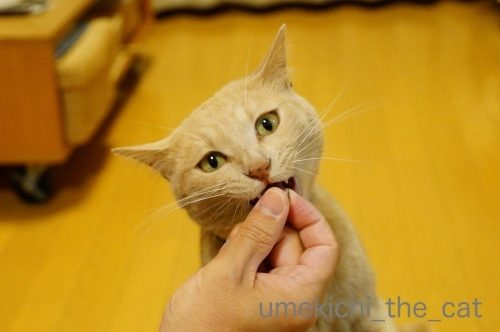
食べ始めるとこの顔ですw
キバがポイント♡
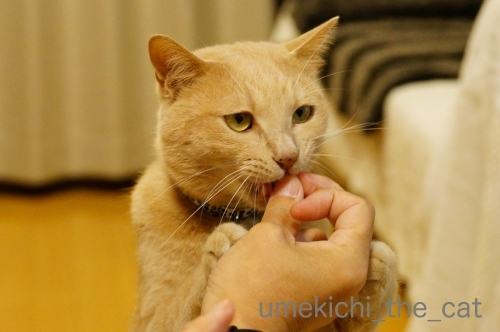
かなり悪いです。

悪いというよりなにかに憑依されている系。
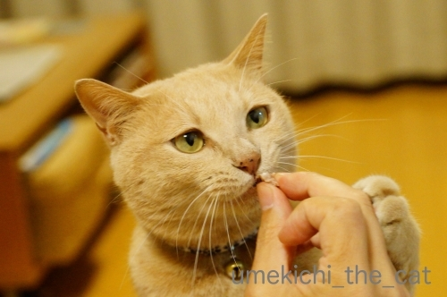
真剣な悪顔が素敵♪
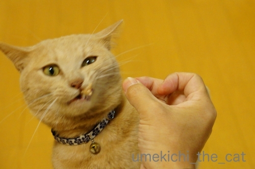
ワイルド感溢れる悪顔。
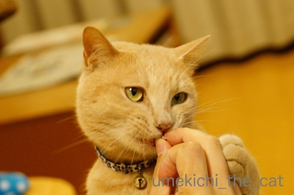
ニヒルな感じにもキメますよ(*>艸<)
おまけ

これは猫じゃない別の生物？
口元に見えているのは舌ではなくかつおです(≧▽≦)
皆さんはどの悪顔がお好みでしょうか＾＾
先日藤並 香衣さんのところで目にしたニュース。
umeki_chiiRT @nara_aigokai: 【見たら必ずRTしてください】 子鹿には絶対に触らないでください。 子鹿に人間の匂いが付いてしまうと、お母さん鹿が子育てをしなくなります。 お母さん鹿がいなくては、子鹿は生きていけません。 絶対に、触らないでください。 #奈良の鹿愛護…05/29 15:05
生まれて間もない子鹿を抱っこして写真を撮ろうとする人がいるようです。
おそらく外国人旅行客だと思うのですが・・・
鹿せんべいを焦らされたり子供を抱っこされたり鹿さんの受難が続いています。
それらを食い止める有効な方法は何かしら・・・
【追記】
鹿の赤ちゃんの話、5月30日のNHKの全国ニュースでも話題になっていました。
ニュースでは出産後のお母さん鹿は過敏になっているので不用意に人間が近づくと
お乳が出なくなってしまうこともあると伝えていましたよ。
また死んだ鹿のお腹からプラスチックゴミが大量に発見されたと
#奈良の鹿愛護協会 のツイートも目にしました。
どれもニンゲンがマナーを守れば防げることばかりです！
Twitterで心ある方が各国言語に翻訳してくださっているのを発見。
Twitter民の方々、リツイートをお願い致しますm(_ _)m
長くひろがる猫は季節の風物詩 [梅吉]
週末は暑かったですねー。
家を空ける時は涼しく過ごせるように猫様への配慮が欠かせなくなってきました。
がその避暑地で過ごした様子が見られないこともしばしば(⌒-⌒;
暑い冷蔵庫の上で寝ていたり西日の当たる窓辺に寝ていたりするんですよね・・・
なんでー；；

フローリングに伸びていることも多いです。
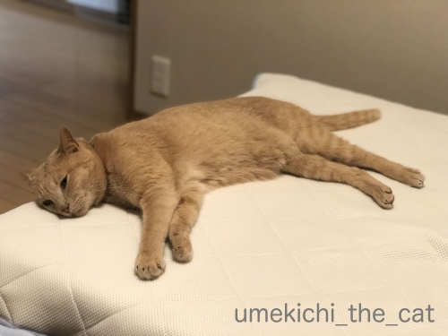
夜もマットレスの足元の方でお休み。
もうお布団の中には入ってきませんよ。
明け方になると「はようおきてや」と圧をかけに
肩口にのしっ！と乗ってはきますけどwww

寝入る前は白目がち(*>艸<)

トンネルのなかでも長くなってます。

見た目的には一番涼しそうな場所でしょうか。
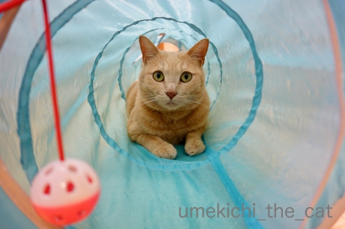
最近トンネルを覗き込むと飛びついてくるようになりました。
おかーさんは獲物ですかー！！
↑ガブッと一押し↑
家を空ける時は涼しく過ごせるように猫様への配慮が欠かせなくなってきました。
がその避暑地で過ごした様子が見られないこともしばしば(⌒-⌒;
暑い冷蔵庫の上で寝ていたり西日の当たる窓辺に寝ていたりするんですよね・・・
なんでー；；
フローリングに伸びていることも多いです。
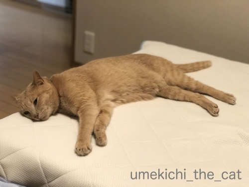
夜もマットレスの足元の方でお休み。
もうお布団の中には入ってきませんよ。
明け方になると「はようおきてや」と圧をかけに
肩口にのしっ！と乗ってはきますけどwww
寝入る前は白目がち(*>艸<)
トンネルのなかでも長くなってます。
見た目的には一番涼しそうな場所でしょうか。
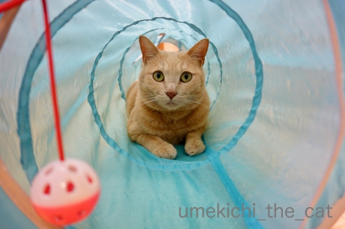
最近トンネルを覗き込むと飛びついてくるようになりました。
おかーさんは獲物ですかー！！

カフェオレ色の梅吉

梅吉 2023年8月10日 永眠


梅吉と出会った譲渡会

犬猫の理由なき殺処分ゼロ
妄想広告
UMEKICHI 光

爆発的に早い！
時々攻撃的！
Thanks to Mr.Boss365
爆発的に早い！
時々攻撃的！
Thanks to Mr.Boss365